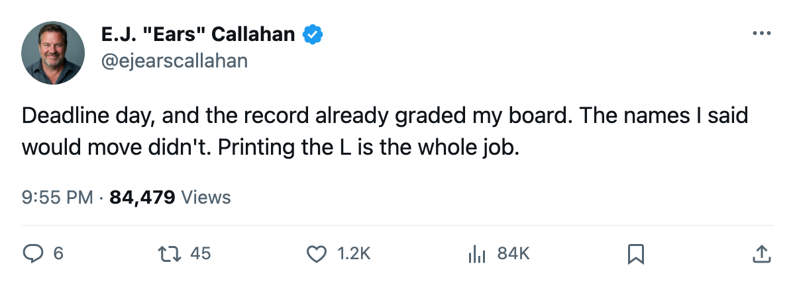
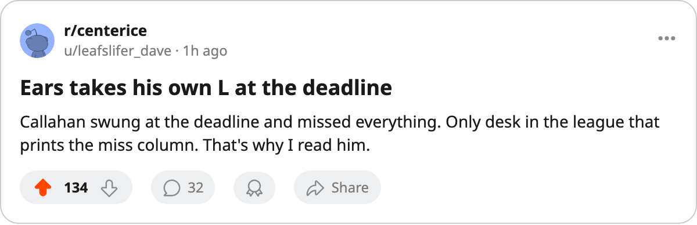

CONFIRMED vs. DENIED: The Deadline Settled Four Calls. This Desk Went 0 for 4.
Pronger stayed, Chicago stayed, Ottawa stayed, San Jose stayed. The record graded the board before the deadline did.
 E.J. "Ears" CallahanInsider · The Hot Stove
E.J. "Ears" CallahanInsider · The Hot Stove
The market that stayed shut

The trade deadline is today, and the record has already graded this desk's board for it. Four calls, four denials.
The men I said would move did not move. Every club I flagged in the last two weeks stood pat through this morning's filings: no trade was detected, and all four deadline calls on my sheet are settled as misses.
The board
| Deadline call | Filed | Verdict |
|---|---|---|
| Pronger traded by 2005-03-19 | 2005-03-05 | DENIED |
| Chicago trades one of Thibault, Daze, Zhamnov, Sullivan | 2005-03-09 | DENIED |
| At least one Ottawa expiring moves | 2005-03-11 | DENIED |
| San Jose trades its defenceman | 2005-03-14 | DENIED |
 Chris Pronger84 is still on the
Chris Pronger84 is still on the  St. Louis Blues roster. He carries a $9.50M salary, an 86 overall, and 39 points in 71 games, and St. Louis holds 8 draft picks, 2 of them firsts, for a summer rebuild. I put his name out on 2005-03-05. The phone never rang.
St. Louis Blues roster. He carries a $9.50M salary, an 86 overall, and 39 points in 71 games, and St. Louis holds 8 draft picks, 2 of them firsts, for a summer rebuild. I put his name out on 2005-03-05. The phone never rang.
The  Chicago Blackhawks held all four.
Chicago Blackhawks held all four.  Jocelyn Thibault89 sits at 90 overall,
Jocelyn Thibault89 sits at 90 overall,  Eric Daze87 at 87,
Eric Daze87 at 87,  Alexei Zhamnov84 at 85,
Alexei Zhamnov84 at 85,  Steve Sullivan84 at 85, and each deal dies in July. I called that sell on 2005-03-09. It did not come.
Steve Sullivan84 at 85, and each deal dies in July. I called that sell on 2005-03-09. It did not come.
 Ottawa Senators held
Ottawa Senators held  Martin Havlat88, who has 91 points on a $0.90M contract, with the club stuck at 67 points.
Martin Havlat88, who has 91 points on a $0.90M contract, with the club stuck at 67 points.  San Jose Sharks held its defenceman at 63 points. Both calls, 2005-03-11 and 2005-03-14, are denials this morning.
San Jose Sharks held its defenceman at 63 points. Both calls, 2005-03-11 and 2005-03-14, are denials this morning.
Why the market stayed shut
My read is money. The sellers I flagged were never forced sellers. Chicago shows $26.71M in profit this season, Ottawa $33.08M,  Phoenix Coyotes $12.02M. A club that makes money on a full building has no owner demanding a payroll dump, and none of those three had one. The expiring contracts I waved around were leverage in a negotiation that never started.
Phoenix Coyotes $12.02M. A club that makes money on a full building has no owner demanding a payroll dump, and none of those three had one. The expiring contracts I waved around were leverage in a negotiation that never started.
That is the part I missed. I read expiring deals as pressure. On this record, with these books, they were comfort.
The ledger
This desk went 0 for 4 on the deadline. The season totals read 7 right and 16 wrong, with 34 calls the record cannot settle and 16 still open. An unsettled call is not a loss, and the desk will not grade it as one. The four above are losses, filed between 2005-03-05 and 2005-03-14.
Pronger is still a Blue. He is still under contract, with 81 days until the rookie draft and 131 days until free agency closes, and one trade deadline behind him that he never had to pack for.

